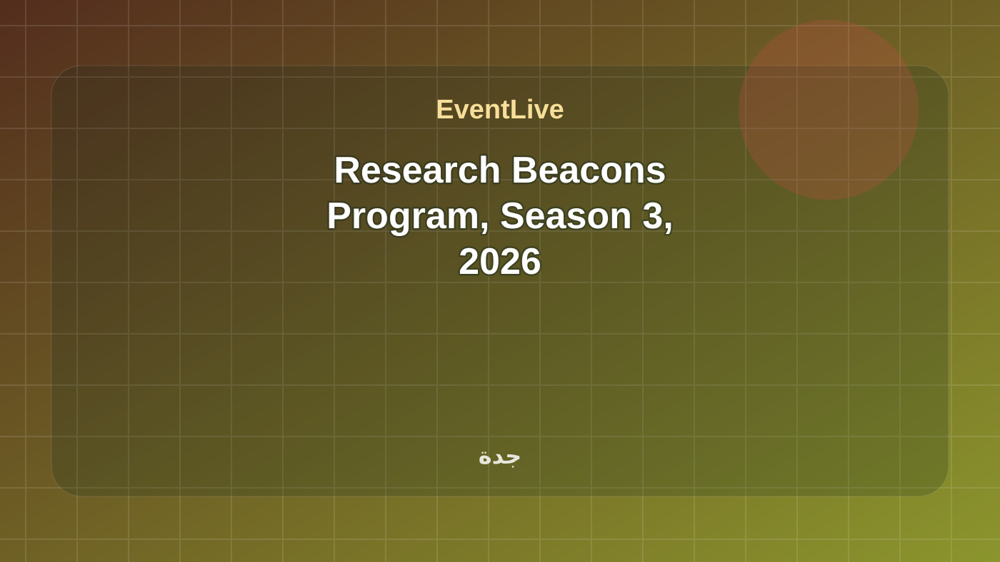
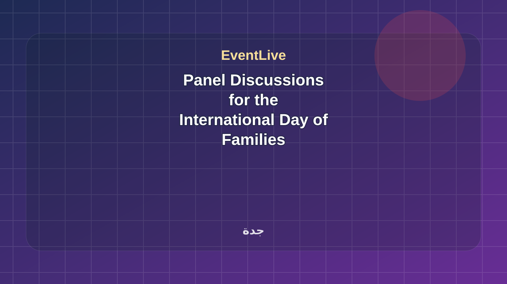
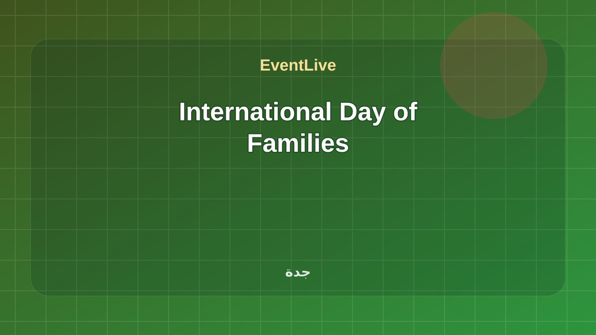
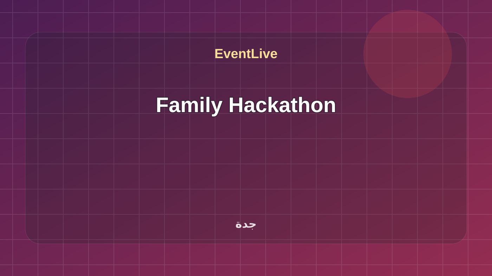
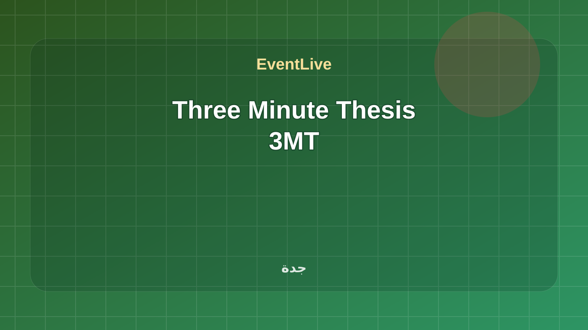
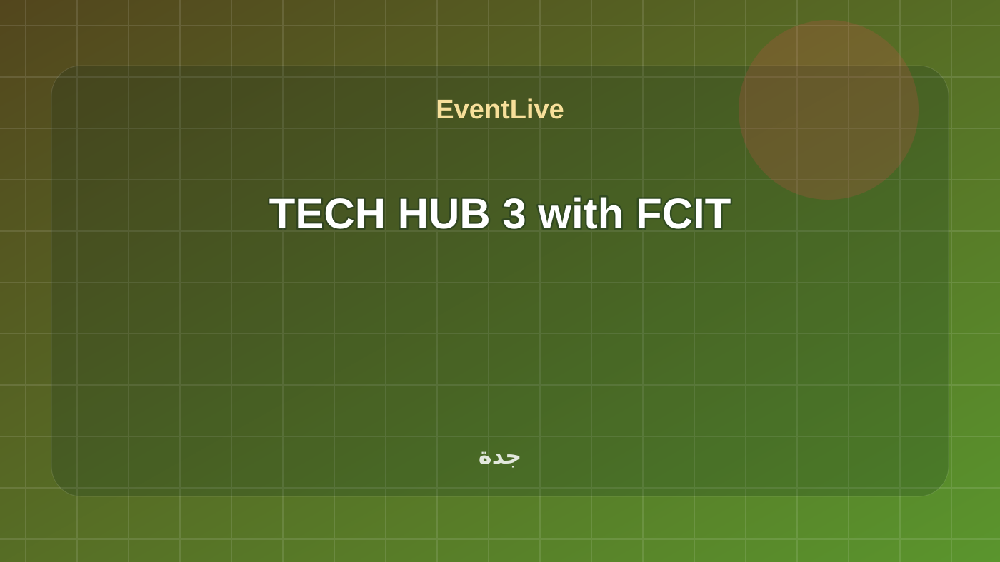
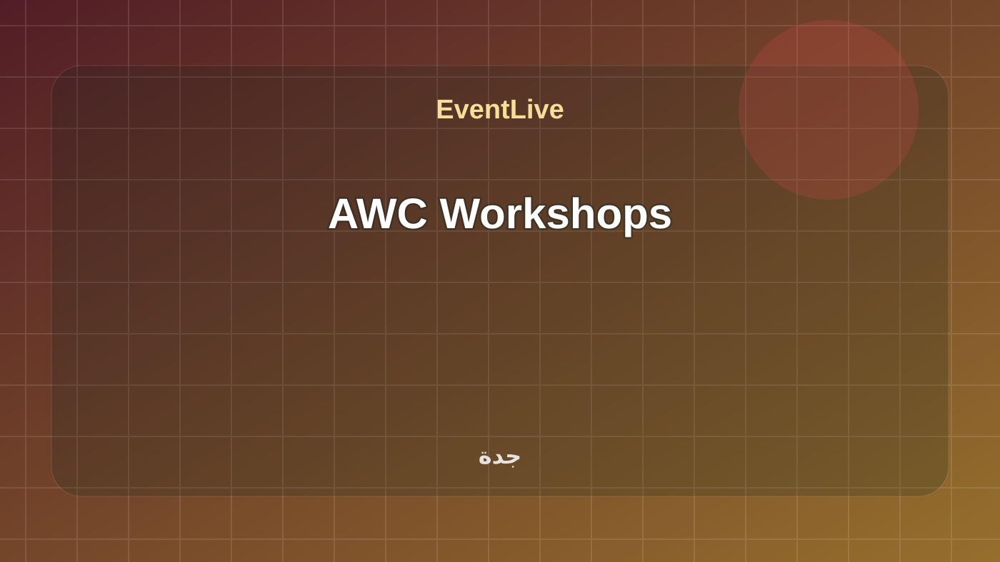

تابع جامعات ومجتمع
هذه الروابط تتحدث مع كل بناء وتعرض الفعاليات القادمة والجارية لهذا السياق فقط.
جامعات ومجتمع في السعودية مع وقت الفعالية ومكانها ومصدرها وحالة الجدول الحي.
هذه الروابط تتحدث مع كل بناء وتعرض الفعاليات القادمة والجارية لهذا السياق فقط.
فعالية رسمية من تقويم جامعة الملك عبدالعزيز. التاريخ المعلن: 07 Jul 2026 - 29 Jul 2026. Registration Now Open for Children at the Childhood Studies Center for the Academic Year 1448 AH ضمن جامعات ومجتمع في جدة. تبدأ الفعالية ٠٧/٠٧/٢٠٢٦، ٩:٠٠ ص وتنتهي ٢٩/٠٧/٢٠٢٦، ٦:٠٠ م حسب البيانات المتاحة. تعرض الصفحة وقت الفعالية وموقعها ومصدرها وروابط التقويم والاتجاهات عند توفرها. المصدر: Saudi Universities and Technical Colleges.

فعالية رسمية من تقويم جامعة الملك عبدالعزيز. التاريخ المعلن: 07 Jul 2026 - 29 Jul 2026. Registration Now Open for Children at the Childhood Studies Center for the Academic Year 1448 AH ضمن جامعات ومجتمع في جدة. تبدأ الفعالية ٠٧/٠٧/٢٠٢٦، ٩:٠٠ ص وتنتهي ٢٩/٠٧/٢٠٢٦، ٦:٠٠ م حسب البيانات المتاحة. تعرض الصفحة وقت الفعالية وموقعها ومصدرها وروابط التقويم والاتجاهات عند توفرها. المصدر: Saudi Universities and Technical Colleges.
تفاصيل الحضور
معسكر تدريبي مصمم لتزويد المطورين بالمهارات والمعرفة اللازمة لتصميم، وبناء، ونشر، وإدارة برمجيات عالية الأداء، قابلة للتطوير، وموثوقة على Google Cloud Platform, موجهة للمطورين الذين يمتلكون خبرة أساسية في البرمجة ويرغبون في الانتقال إلى ... المصدر الرسمي: أكاديمية طويق.
تفاصيل الحضورمعسكر تدريبي متقدم يركز على الجوانب البرمجية والعملية لتطوير الدرونز المسيرة، من خلال فهم معمارية أنظمة الطيار الآلي والتعامل مع المحاكيات لاختبار أداء الدرونز في بيئات افتراضية. المصدر الرسمي: أكاديمية طويق.
تفاصيل الحضوريهدف هذا المعسكر إلى تأهيل المشاركين لاكتساب مهارات متقدمة في الأمن السيبراني عبر تدريب عملي مكثف يشمل حماية الأنظمة والشبكات ومواقع الويب، تحليل الثغرات الأمنية، واستخدام أدوات متقدمة لتقييم المخاطر. المصدر الرسمي: أكاديمية طويق.
تفاصيل الحضور
يهدف المعسكر إلى تأهيل المتدربين بالمهارات العملية لتصميم وتنفيذ الحلول السحابية على Google Cloud بكفاءة. المصدر الرسمي: أكاديمية طويق.
تفاصيل الحضور
A national initiative aimed at enhancing creativity and innovation among young Saudi youth by providing youth with the opportunity to present solutions to community challenges. المصدر الرسمي: Misk Hub.
تفاصيل الحضور
Money20/20 Middle East is the region’s definitive fintech event, bringing together over 38,500 visitors, 450+ global brands, 350+ speakers, 400+ investors, and 150+ startups to shape the future of money, finance, and technology. As the most influential gathering in the Middle East, it offers world-class thought leadership, groundbreaking innovations, and high-impact networking that fuels business growth and positions Saudi Arabia at the heart of the global fintech revolution. Book Now
تفاصيل الحضورThe 5th Annual Kingdom Business Luxury Travel Congress 2026 (KBLT) takes place in Riyadh on 15–16 September 2026, offering a boutique, content-led platform designed for high-level discussions and real business outcomes. Under the theme “The Saudi Connection – Outbound Travel Meets Global Opportunities,” the event connects global luxury travel and hospitality suppliers with Saudi Arabia’s budget-holding buyers through an invitation-only, pre-qualified audience and structured one-to-one meetings. With a tailored agenda focused matchmaking and networking, KBLT provides targeted access to the Kingdom’s fast-growing outbound luxury travel segment while spotlighting Saudi change-makers shaping the future of travel, hospitality, and premium experiences in line with Vision 2030. Register Now
تفاصيل الحضور
فعالية رسمية من تقويم جامعة الملك عبدالعزيز. التاريخ المعلن: 17 May 2026 - 20 May 2026. Research Beacons Program, Season 3, 2026 ضمن جامعات ومجتمع في جدة. تبدأ الفعالية ١٧/٠٥/٢٠٢٦، ٩:٠٠ ص وتنتهي ٢٠/٠٥/٢٠٢٦، ٦:٠٠ م حسب البيانات المتاحة. تعرض الصفحة وقت الفعالية وموقعها ومصدرها وروابط التقويم والاتجاهات عند توفرها. المصدر: Saudi Universities and Technical Colleges.
تفاصيل الحضور
فعالية رسمية من تقويم جامعة الملك عبدالعزيز. التاريخ المعلن: 14 May 2026 - 14 May 2026. Panel Discussions for the International Day of Families ضمن جامعات ومجتمع في جدة. تبدأ الفعالية ١٤/٠٥/٢٠٢٦، ٩:٠٠ ص وتنتهي ١٤/٠٥/٢٠٢٦، ٦:٠٠ م حسب البيانات المتاحة. تعرض الصفحة وقت الفعالية وموقعها ومصدرها وروابط التقويم والاتجاهات عند توفرها. المصدر: Saudi Universities and Technical Colleges.
تفاصيل الحضور
فعالية رسمية من تقويم جامعة الملك عبدالعزيز. التاريخ المعلن: 14 May 2026 - 14 May 2026. International Day of Families ضمن جامعات ومجتمع في جدة. تبدأ الفعالية ١٤/٠٥/٢٠٢٦، ٩:٠٠ ص وتنتهي ١٤/٠٥/٢٠٢٦، ٦:٠٠ م حسب البيانات المتاحة. تعرض الصفحة وقت الفعالية وموقعها ومصدرها وروابط التقويم والاتجاهات عند توفرها. المصدر: Saudi Universities and Technical Colleges.
تفاصيل الحضور
فعالية رسمية من تقويم جامعة الملك عبدالعزيز. التاريخ المعلن: 13 May 2026 - 13 May 2026. Family Hackathon ضمن جامعات ومجتمع في جدة. تبدأ الفعالية ١٣/٠٥/٢٠٢٦، ٩:٠٠ ص وتنتهي ١٣/٠٥/٢٠٢٦، ٦:٠٠ م حسب البيانات المتاحة. تعرض الصفحة وقت الفعالية وموقعها ومصدرها وروابط التقويم والاتجاهات عند توفرها. المصدر: Saudi Universities and Technical Colleges.
تفاصيل الحضور
فعالية رسمية من تقويم جامعة الملك عبدالعزيز. التاريخ المعلن: 30 Apr 2026 - 30 Apr 2026. Three Minute Thesis 3MT ضمن جامعات ومجتمع في جدة. تبدأ الفعالية ٣٠/٠٤/٢٠٢٦، ٩:٠٠ ص وتنتهي ٣٠/٠٤/٢٠٢٦، ٦:٠٠ م حسب البيانات المتاحة. تعرض الصفحة وقت الفعالية وموقعها ومصدرها وروابط التقويم والاتجاهات عند توفرها. المصدر: Saudi Universities and Technical Colleges.
تفاصيل الحضور
فعالية رسمية من تقويم جامعة الملك عبدالعزيز. التاريخ المعلن: 25 Apr 2026 - 30 Apr 2026. TECH HUB 3 with FCIT ضمن جامعات ومجتمع في جدة. تبدأ الفعالية ٢٥/٠٤/٢٠٢٦، ٩:٠٠ ص وتنتهي ٣٠/٠٤/٢٠٢٦، ٦:٠٠ م حسب البيانات المتاحة. تعرض الصفحة وقت الفعالية وموقعها ومصدرها وروابط التقويم والاتجاهات عند توفرها. المصدر: Saudi Universities and Technical Colleges.
تفاصيل الحضور
فعالية رسمية من تقويم جامعة الملك عبدالعزيز. التاريخ المعلن: 01 Apr 2026 - 18 May 2026. AWC Workshops ضمن جامعات ومجتمع في جدة. تبدأ الفعالية ٠١/٠٤/٢٠٢٦، ٩:٠٠ ص وتنتهي ١٨/٠٥/٢٠٢٦، ٦:٠٠ م حسب البيانات المتاحة. تعرض الصفحة وقت الفعالية وموقعها ومصدرها وروابط التقويم والاتجاهات عند توفرها. المصدر: Saudi Universities and Technical Colleges.
تفاصيل الحضور